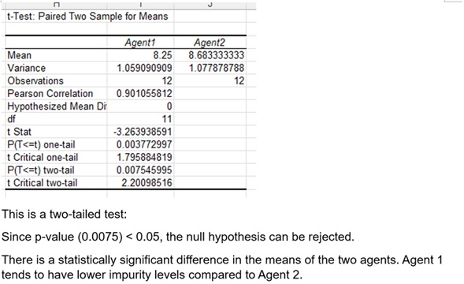

Worksheets
During this module, I’ve also worked on some statistical worksheets, which included working with provided data sets. In this section, I’ll highlight some of the t-tests I’ve done on the data sets, and how I’ve interpreted them. I will also highlight some of the charts I produced for these worksheets and show my interpretations of the charts. All of this was done on Excel.
Figure Five

To be clear on what we’re looking at. The related data set shows the incomes of 60 different men and women. The screenshot above shows a t-test being done to compare the means of these incomes and this can be used to determine which gender had a higher mean average.
Figure Six
The first step here is to develop a null hypothesis and then an alternative to it. The data from the first screenshot which was produced using Excel’s data analysis toolkit, provides evidence for or against the null hypothesis.
Figure Seven
In the next screenshot, I interpret the results from the outputs and determine that the evidence suggests rejecting the null hypothesis in this case, which assumes that the mean income for males is equal or less than that of females. If we reject the null hypothesis then we assume the alternative hypothesis is correct which in this case, suggests that males earn more than females on average based on this data set. I also include some underlying assumptions made about the data set, which assumes the data inputs are all independent.
The next dataset I worked with, was comparing the impurities between two agents. The dataset recorded two results for each agent, and the lower the impurities the better the agents were performing.
Figure Eight
This is the null and alternative hypothesis I suggested for comparing the means between the agents. The null hypothesis assumes there is no difference and alternative hypothesis assumes there is a difference.
Figure Nine

Here is the output of a t-test which compares the means of the agents. I interpret the results using a two-tailed test, which in this case I believed the evidence suggested that the null hypothesis was wrong, so there is a difference in the means of the agents.
Figure Ten
The next t-test I did was using the same output but this time, I had to perform a one-tail test. I used the same output and used the one-tail results this time. I produced new hypotheses and determined that the evidence suggested that Agent 1 was more effective. This was a little different from the first t-test because the other t-test was mainly checking to see if there was a difference in the means, while this t-test was testing to see if Agent 1 was more effective or not.
The next part of my worksheets included producing charts and interpreting them, I’ll go over these in this section.
Figure Eleven

The chart on the left was provided as an example. I produced the chart on the right. This was for a dataset that comparing brand preferences in two different areas.
Figure Twelve

I combined the charts for easier viewing.
Figure Thirteen

The next screenshot shows my interpretation of the charts produced. Where I determine that Brand A is slightly more popular in Area 2 compared to Area 1 while Brand B is much more popular in Area 2 compared to Area 1.
Figure Fourteen
This next output is produced using a dataset that checks how abundant/sparse/absent a certain species of Heather is in two different locations.
Figure Fifteen
This is my interpretation of the produced chart.
Figure Sixteen

This output is produced by looking at a dataset comparing how much weight two groups of people lost using two different diets.
Figure Seventeen

This was my interpretation of the histogram produced.
Overall, working through these worksheets helped reinforce my understanding of statistical methods, the use of t-tests and producing charts, and then interpreting the results. These exercises improved my Excel skills, as that was the tool I used to produce all these outputs and charts. They’ve improved my ability to interpret statistical outputs and helped my ability to produce them using the appropriate tools.